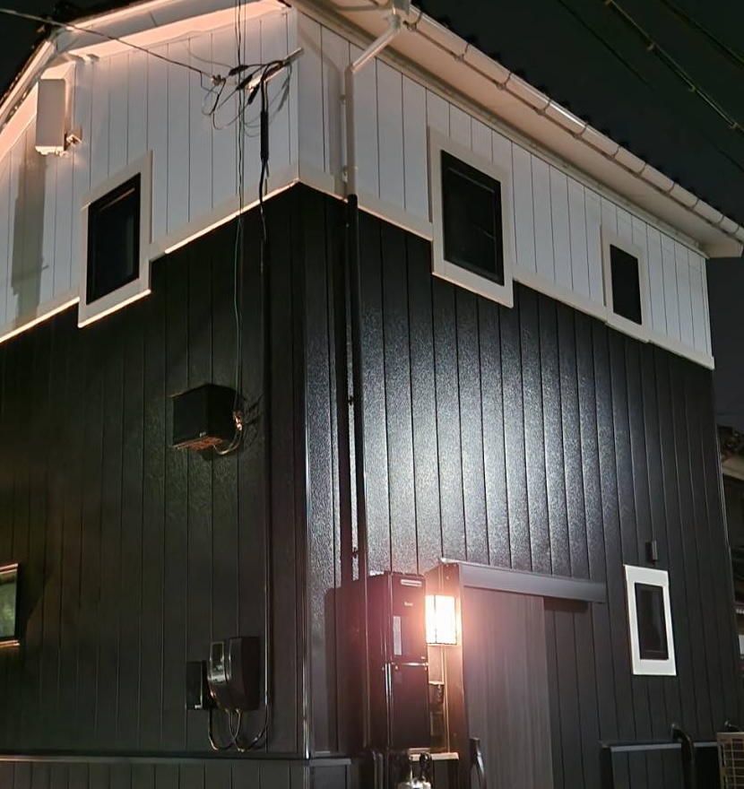
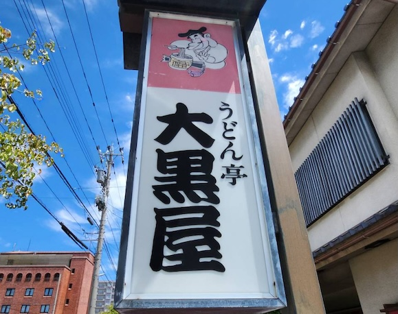

金澤屋元菊について
お部屋について
アメニティ
宿泊料金
アクセス
よくある質問
空室検索・ご予約

金澤屋元菊について
お部屋について
アメニティ
宿泊料金
アクセス
よくある質問
アクセス
空室検索・ご予約
アクセス
空室検索・ご予約
アクセスについて
金沢駅西口から歩いて、約15分。金沢の街並みを眺めながら、お気をつけてお越しください。
また、お車でお越しの方用に1台分の駐車場をご用意しておりますので、ご利用ください。
【住所】
〒920-0036
石川県金沢市元菊町5-13
【最寄り駅】
JR金沢駅
駅西口から徒歩15分程度
【お車】
金沢東ICから20分程
駐車場1台あり（徒歩1分）
近隣店舗・施設
金沢市民芸術村
金澤屋元菊から徒歩5分ほどで、レトロな雰囲気を味わえる穴場スポット。市民の活気ある創作活動の場であり、広大な芝生広場もあります。四季を感じながらの散策やピクニックにも最適です。
Googlemap
金沢市民芸術村
金澤屋元菊から徒歩5分ほどで、レトロな雰囲気を味わえる穴場スポット。市民の活気ある創作活動の場であり、広大な芝生広場もあります。四季を感じながらの散策やピクニックにも最適です。
Googlemap

うどん亭 大黒屋
金澤屋元菊から徒歩4分。地元民から長年愛されるうどん屋さん。うどん以外にも豊富なメニューの和食が楽しめる人気店。
Googlemap
クスリのアオキ まめだ大通り店
金澤屋元菊から徒歩5分。日用品や食品も揃う便利なドラッグストア。急な買い物にも対応でき、長期滞在の際にも便利にご利用いただけます。
Googlemap
クスリのアオキ まめだ大通り店
金澤屋元菊から徒歩5分。日用品や食品も揃う便利なドラッグストア。急な買い物にも対応でき、長期滞在の際にも便利にご利用いただけます。
Googlemap
まちのり 金沢市民芸術村
金澤屋元菊から徒歩5分。レンタサイクル「まちのり」のポートがございます。自転車で金沢市内の観光スポットを巡るのに最適です。
Googlemap
Copyright© KANAZAWAYA All Rights Reserved.